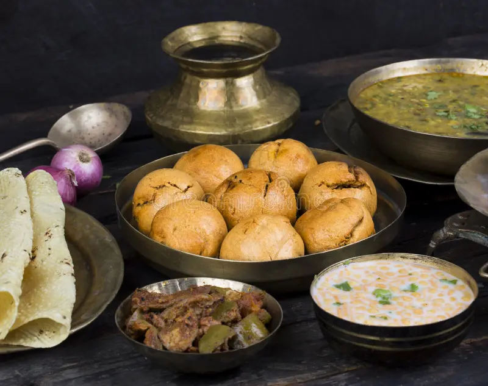
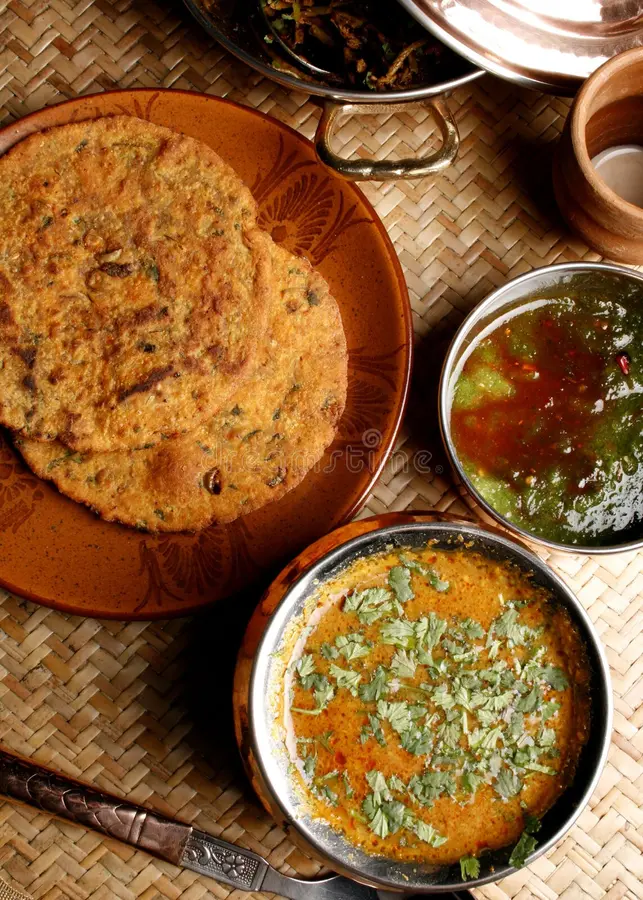
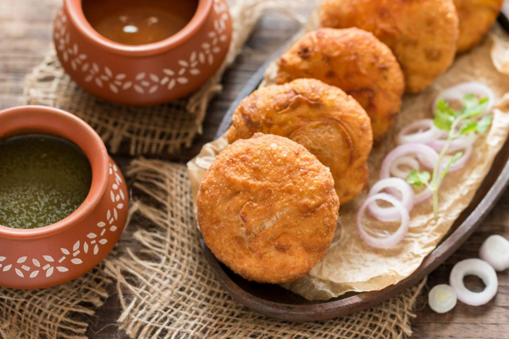
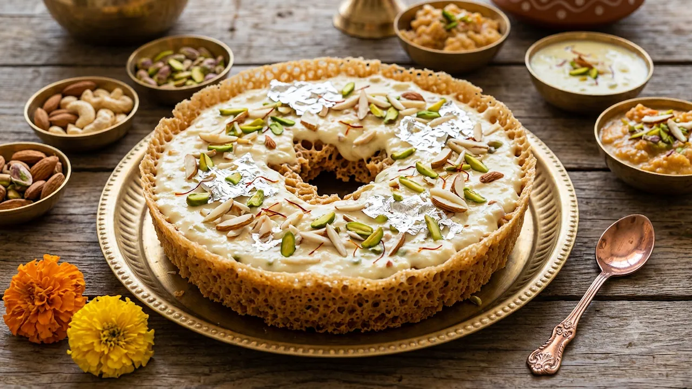

Padharo Mhare Desh
I like the food of Rajasthan very much.

It is the pride of Rajasthan.
Everyone likes baati with ghee.

It is made from besan.
It tastes like home food.

It is famous in Jodhpur.
It is hot and crispy.

It is a sweet dish.
Everyone eats it on Teej.